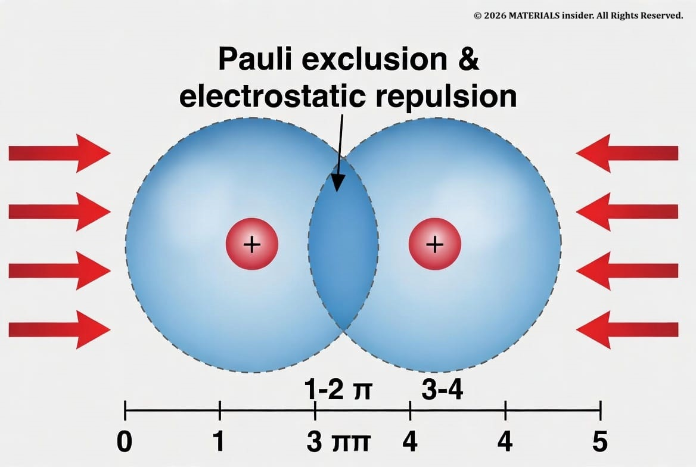
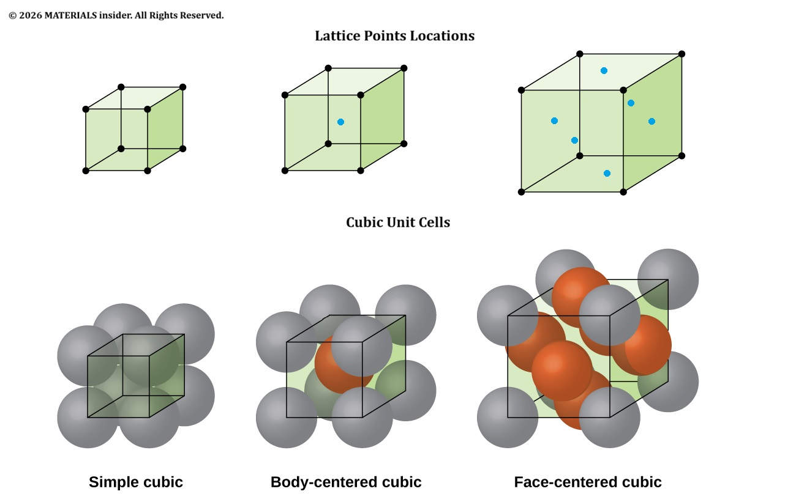
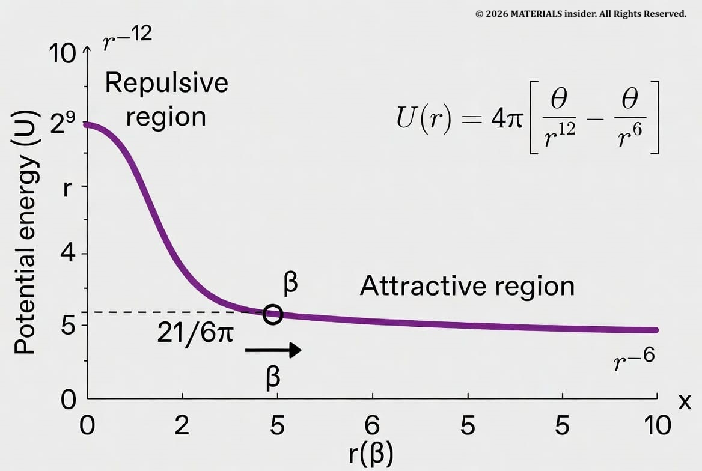
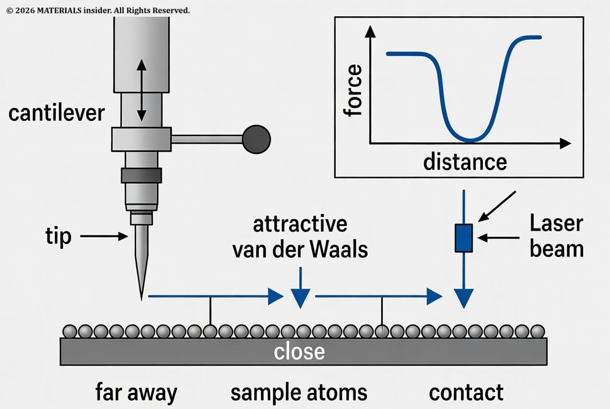

The Illusion of Touch at the Atomic Scale: Interatomic Distances and Forces in Materials Science
Solids feel rigid and surfaces appear to make contact, yet atoms never truly touch in the classical sense. Instead, what we perceive as touch arises from the balance of attractive and repulsive forces between electron clouds.
For materials science students, the everyday notion of “touch” quickly breaks down when examined at the atomic level. Solids feel rigid and surfaces appear to make contact, yet atoms never truly touch in the classical sense. Instead, what we perceive as touch arises from the balance of attractive and repulsive forces between electron clouds. Understanding these distances and interactions is essential for explaining mechanical properties, designing nanomaterials, and performing accurate simulations.

Atoms consist of a dense, positively charged nucleus surrounded by a probabilistic electron cloud. When two atoms approach, their electron clouds begin to overlap at separations of a few angstroms (1 Å = 10-10m). This overlap triggers powerful repulsion dominated by the Pauli exclusion principle (electrons cannot occupy the same quantum state) and electrostatic repulsion between negatively charged electrons. The result is a steep “repulsive wall” that prevents nuclei from getting arbitrarily close.
Non-bonded “contact” typically occurs near the sum of van der Waals radii (roughly 3–4 Å for many elements). In contrast, when atoms form chemical bonds, electron sharing or transfer allows much closer approach—usually 1–2.5 Å—defined by covalent, ionic, or metallic radii.
Interatomic Distances in Real Materials:
These characteristic lengths directly govern material behavior:
- Metals (e.g., copper in FCC structure): Nearest-neighbor distance ≈ 2.56 Å. Metallic bonding at this scale enables high electrical conductivity, ductility, and packing efficiency.
- Ionic ceramics (e.g., NaCl): Na–Cl distance ≈ 2.82 Å, producing strong, directional ionic bonds and brittleness.
- Layered materials (e.g., graphite): Strong in-plane C–C covalent bonds (~1.42 Å), but weak interlayer van der Waals spacing of 3.35 Å. This anisotropy makes graphite an excellent solid lubricant.
- Polymers: Polymer chains pack via van der Waals forces at ~3.5–4 Å between chains, explaining low melting points, flexibility, and creep behavior compared to metals or ceramics.
These distances determine atomic packing factor, density, and bonding energy, which in turn control hardness, elastic modulus, and thermal expansion.

Modeling Atomic Interactions: The Lennard-Jones Potential
Materials scientists rarely treat atoms as hard spheres. Instead, they use empirical interatomic potentials. The classic Lennard-Jones (LJ) potential approximates van der Waals interactions:
U(r) = 4ε [(σ/r)12 − (σ/r)6]
Here, (r) is the interatomic separation, (ε) is the depth of the attractive well (related to bond strength), and (σ) is the finite distance at which the potential is zero (roughly the atomic diameter). The (r-12) term creates the steep repulsive wall at short range; the (r6) term describes longer-range attraction.
This simple yet powerful model is the foundation of many molecular dynamics (MD) simulations used to predict diffusion, phase transformations, mechanical deformation, and surface phenomena in materials. More sophisticated potentials (Embedded Atom Method for metals, ReaxFF for reactive systems) extend the concept for greater accuracy across different bonding types.

Experimental Access: Atomic Force Microscopy (AFM):
Theory is validated experimentally with Atomic Force Microscopy. A sharp tip mounted on a flexible cantilever raster-scans (or approaches) the sample surface. Far away, attractive van der Waals and capillary forces pull the cantilever downward. As the tip nears atomic contact, repulsive forces dominate, deflecting the cantilever upward. A laser reflected off the cantilever detects these tiny deflections, producing both topographic images at atomic resolution and quantitative **force–distance curves.
AFM is indispensable in materials labs for measuring nanoscale adhesion, elasticity, friction, and even individual bond strengths—directly probing the same interatomic forces discussed above.

Why These Concepts Matter in Materials Science:
The steep repulsive potential explains why condensed matter resists compression. Weak van der Waals forces in molecular solids or between graphene layers enable easy shear and low hardness. In nanotechnology and surface engineering, precise control of these distances enables self-assembly, tailored interfaces in composites, thin-film adhesion, and molecular-scale devices. MD simulations built on these potentials allow virtual testing of new alloys, polymers, and nanomaterials long before synthesis.
In short, “touch” at the atomic scale is a delicate, quantifiable balance of forces occurring over distances measured in angstroms. Mastering these concepts equips materials scientists to design stronger, smarter, and more functional materials—from everyday steels to next-generation 2D materials and beyond.
Sources: louis.pressbooks.pub ---> lattice-structures-in-crystalline-solids
Share this article: